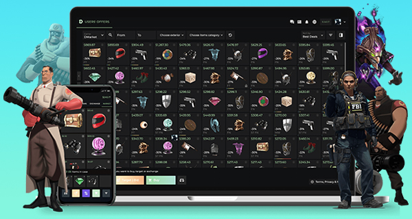
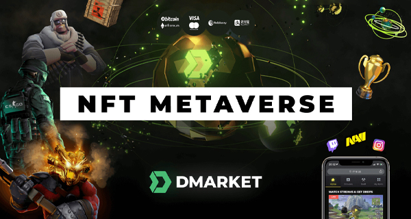
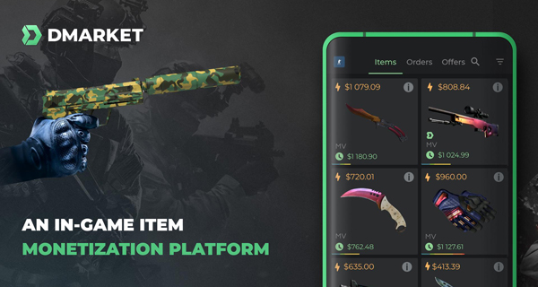

DMarket: The Future of Gaming Marketplaces
Discover the future of gaming marketplaces with DMarket! Our blog covers the latest trends and innovations in gaming industry, from NFTs to in-game skins and more. Click to explore the future of gaming.
DMarket, Counter-Strike 2, CS2
March 23, 2023

DMarket: A Guide to Decentralized Gaming Marketplaces
Interested in decentralized gaming marketplaces? Our expert guide covers everything you need to know, from blockchain technology to NFTs and more. Click now to learn how decentralized marketplaces are transforming the gaming industry.
DMarket, Counter-Strike 2, CS2
March 23, 2023

About CS2 & DMarket
Discover the ultimate guide to CS2 and DMarket! Our blog covers everything you need to know about these popular platforms, from buying and selling to trading and more. Click to explore our expert insights and tips.
DMarket, Counter-Strike 2, CS2
March 23, 2023
How to get CS2 skins cheaper on DMarket
Want to save money on CS2 skins? Check out our expert tips for finding the best deals on DMarket! From promo codes to trading strategies, we'll show you how to get the skins you want at a fraction of the price. Click here to start saving!
DMarket, Counter-Strike 2, CS2
March 23, 2023
How to sell your CS2 skins on DMarket
Learn how to sell your CS2 skins on DMarket with ease! Our step-by-step guide will show you how to get started and sell your items securely for the best prices. Read on for expert tips and tricks.
DMarket, Counter-Strike 2, CS2
March 23, 2023
How to trade your CS2 skins on DMarket
Ready to trade your CS2 skins? Discover the best tips and tricks for successful trades on DMarket! Our expert guide will show you how to maximize your profits and get the most out of your trades. Click to learn more.
DMarket, Counter-Strike 2, CS2
March 23, 2023